hyprtile
Your Android home screen as a tiling Linux desktop, inspired by Hyprland, Omarchy and kitty. Widgets become windows with gaps and glowing borders, under a waybar, with a terminal, a launcher and 40 themes from the ricing scene.
Whole looks in one tap, from soft pastel haze to liquid glass and a full rgb glow, each with its own wallpaper, and each look carries over to your lock screen.
This is the user guide, and the place to report bugs and ask for features. The app itself is on Google Play.
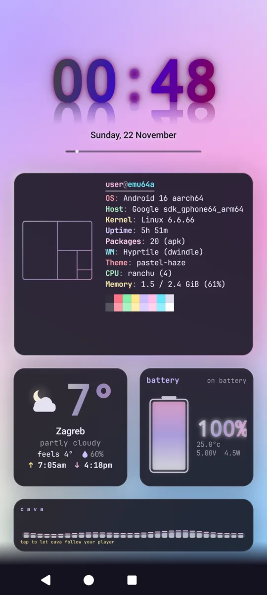
- 78looks, a whole look each
- 40themes, 29 more with pro
- 18moving wallpapers, plus 8 painted and your phone's own
- 67window kinds, 30 more with pro, 3 for Insiders
- 17ready workspaces, a whole page each
- 0ads, accounts or analytics
Whole looks in one tap
One tap changes the whole look: wallpaper, colours, glass, borders, fonts and clock. Your windows stay, and your own look at the end brings yours back. The painted looks lead the list; a look built on a pro theme carries a pro tag.
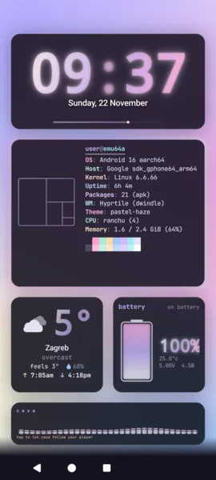
pastel hazethe look of a fresh install: soft lilac, pink and blue haze 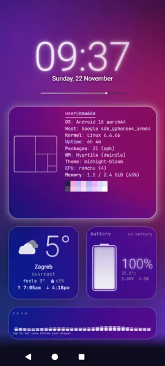
midnight bloomviolet and pink 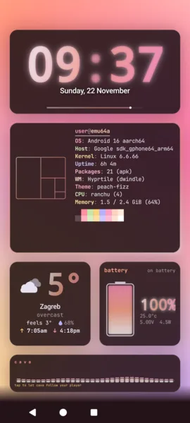
peach fizzwarm sunset 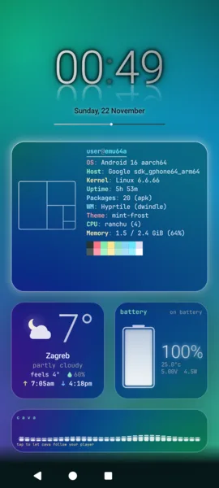
mint frostaurora green 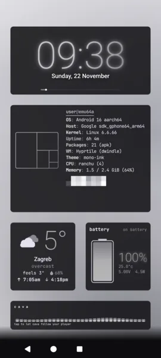
mono inksilver grey with dark windows and a framed clock 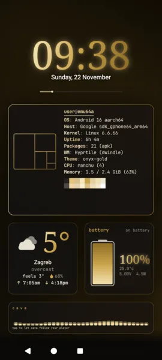
onyx goldfull black, old gold
The six mesh looks lead the list. It also has cream and forest, deep forest, eink paper, latte paper, tokyo rain, vice city, neon hyper, nord lights, dracula, gruvbox retro, area 51 cat and many more, 78 in all. Every look · recipe: try a look and go back
New since 1.54
- Apps window, your way, new in 2.70 to 2.78: a list layout with a letter rail beside the grid, hide the title, count, section headers or all apps, change the frame, rows and icon style, set apps per row and row size, and turn the letter headers and the rail off (the edge still scrolls by letter). Rename any app from its menu. Private space apps can be hidden or renamed, and removing a work or private copy removes only that copy.
- Text lines and hold time: one setting,
text lines(full, quiet or bare), hides titles, counts and hints in every window.hold timesets how long a press lasts before it counts as a hold. All settings is one scrolling column, rows show their values and wrapped rows keep their switch. - Window settings in hyprtile.conf: each window's options live in the conf, so you can share them by copy and paste, with shelf apps per row too. Also in 2.82: idle animation no longer stutters, and a third party widget can no longer crash the launcher.
- Six mesh looks, new in 2.76 and cut from 36 to six in 2.79: pastel haze, midnight bloom, peach fizz, mint frost, mono ink and onyx gold, each a drifting gradient wallpaper with a free theme, in a first group called mesh. A look you had that is gone becomes the closest one kept. Pastel haze is the look of a fresh install. Camel and navy, emerald and rose are gone.
- Private space: on Android 15 and later, apps in your private space get their own section at the end of the apps window, with a lock and unlock button. Locked, they show nowhere, not even in search. Hide the section in
home and apps. - One opacity slider: windows go from 0, fully clear with only borders and content, to 1, solid. On
autoHyprtile picks the lightest glass that keeps text readable, with every theme. Bar opacity 0 makes the bar and dock fully clear too. - French, German and Italian: every menu, window and TalkBack line follows your phone's language, with days, months, holiday names and numbers too.
- Six new whole looks: floating, brutalist, terminal, paper, neon and minimal, each with its own borders, glass, corners, fonts and clock.
- Menus as full sheets, with fewer words, and more apps by zanoshky in one place.
- School holidays: school breaks in the holidays window for about 36 countries, per zone, breaks of your own, and a school's out countdown with a ring.
- Your windows on the lock screen: weather, holidays, battery, a countdown and more in frosted cards. Only windows with nothing private.
- Stat wallpaper: battery, day, year, weather, holidays or the moon as a live picture behind the lock clock, and steps with pro. The lock screen can have a scene of its own too.
- Replace with, with previews: every window's live preview, the one you replace shown as now, and a tap swaps it into the same place and size.
- A widget gallery: with pro, the Android widget chooser shows the picture each app ships for its widget, and a widget can replace a window or another widget.
- Matchday eye candy: team badges, the pitch under the score, win, draw or loss at full time, and a goal burst.
- Lists keep their place: notifications, news and the link menu stay still while new items arrive.
- Updates in the background: a banner says when a new version is ready to restart, and home starts faster.
- Link stays on your wifi: it only answers devices on the same wifi, never over mobile data.
- More stable: a guard in every part of the app, bringing back a saved copy no longer stalls home, and fixes for lists, rofi, the 2fa import and the clipboard history.
- Browser, for Insiders: web pages as text in your theme, like lynx, with bookmarks, reader view and search. Open full for logins and video.
- Area 51 cat: a new look by Bro8302, shared on Reddit, with a new ufo picture: a saucer lifts cats out of the pines.
- The dock shows every pin, up to 10, and its icons stay round with six apps or more.
- Safer and lighter: health data and keys stay out of backups, screenshots are black while a 2fa code shows, and idle windows and open menus draw far less.
- Portfolio window, for Insiders: profit and loss on your stocks and coins, in your own currency, with a bar for how it splits and a row for each holding in its own currency. Holdings stay sealed on your phone.
- Discord window, for Insiders: the newest posts of one channel of your own server, read live with your own bot. Read only, one channel, nothing in the background.
- Termux scripts, early access: run your own Termux scripts in kitty with
t, and add script windows that show what a script prints, in colour, on a timer. Insiders now, part of pro from 1 February 2027. Seven ready widgets at termux.zanoski.com/widgets. - Forecast model: pick MET Norway, ECMWF, DWD ICON, GFS or Météo France, or leave it on auto.
- 26 more windows up to 2.10: donut, fire, life, glyph, ring, life dots, mood, fasting, a private cycle tracker, calendars, planets, sea, word, define and convert, and with pro screen time, data, ticker, lyrics, apod, speed, uptime, hass, people and wifi.
- Clock fonts and dates: six clock fonts and a date format of your own, on home, the lock screen and the saver.
- Hidden apps, hinge gap, rate us: bring a hidden app back, keep windows off the fold on two screen phones, and rate or tell us what is wrong from the menu. Work profile apps say "(work)".
- Insider: an optional 0.99 a month subscription for bug fixes and the live feeds. Insiders get new features first, their requests read first, and an Insider mark in About.
- A new first run: three screens, pick your look, pick your pages, make it your home, then the tour. Permissions are asked only when a window needs them.
- One main menu in a clearer order, and a new edit strip: add, looks, pages, menu, lock and done.
- Ready workspaces: music, focus, night stand, rice, fit and more, each a whole page in one tap.
- 22 new free windows: word clock, snake, since, punch, water, breathe, tally, qr, tldr, air and pollen, holidays, on this day, dice, fortune, pet, binary clock, progress, habits, inbox, briefing, notepad and forecast.
- 11 new pro windows: rain radar, aurora, quakes, iss, launches, rates, ping, git, matchday with live scores, devices with your buds' battery, and health with steps, heart rate and sleep.
- Eink paper: grey ink on still paper, nothing glows or moves.
- Blue light filter: warms the home, lock screen and screen saver at night.
- Your phone's wallpaper behind the windows, from any wallpaper app, and album art blur in cliamp and cava.
- Pull down: pick its windows and their order, with your next alarm, event and weather in one line.
- Lock screen pills: next alarm, unread count, running timers, pomodoro, stopwatch and work time, plus steps, sleep and buds with pro.
- Landscape layout: a free page edited in landscape keeps its own layout.
- What it shows: a few well chosen parts per window, the rest one tap away, and one big reading when all are off.
- A privacy page that lists every permission and what it is for. Location leaves the phone only rounded to about 1 km.
- Load your own font, any monospace .ttf or .otf, free.
- Smoother and lighter: every list glides after a flick and stops at its ends, pages use less battery, and the nav buttons sit on a solid band.
A tiling home screen
Widgets are windows in a dwindle layout, with gaps, rounded corners, rotating gradient borders, shadows and a frosted blur behind each one. Swipe between workspaces, each with its own windows and a name you give it.
A waybar, a terminal, a launcher
Workspace pills, clock, battery, network, cpu and memory up top. A kitty style terminal greets you with a fastfetch summary and runs a small shell. A rofi style launcher finds any app as you type.
Windows for everything
A big clock, weather with sunrise and sunset, a btop style monitor, notifications, a calendar, pinned apps, a cava visualizer and a music player styled after cliamp, with cliamp radio built in.
Rice it in a config file
hyprtile.conf, in Hyprland's syntax, reloads live as you save it: gaps, borders and gradient colours, rounding, blur and shadow, and the bezier curves that move windows and slide workspaces.
Inside the app
Edit mode, the picker, rofi and more, from a real phone. Scroll sideways for more.
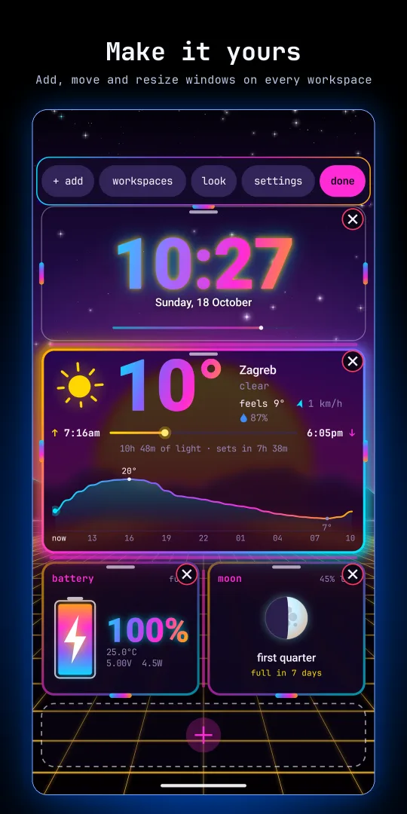
edit mode: add, move and resize 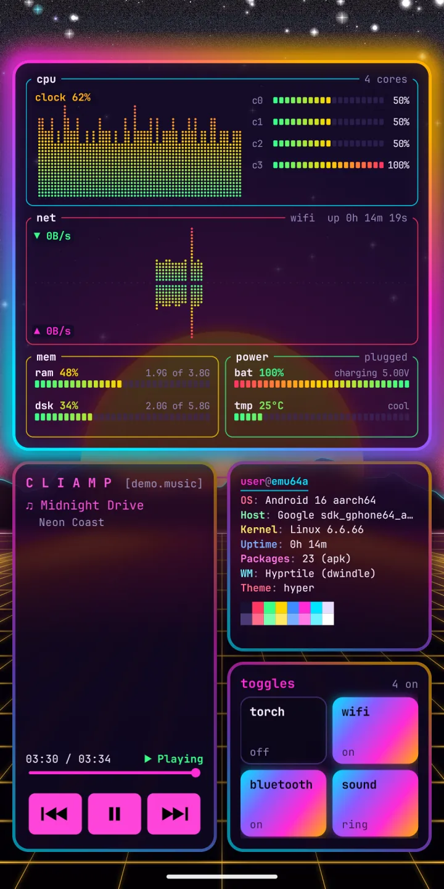
btop, cliamp, fetch and toggles 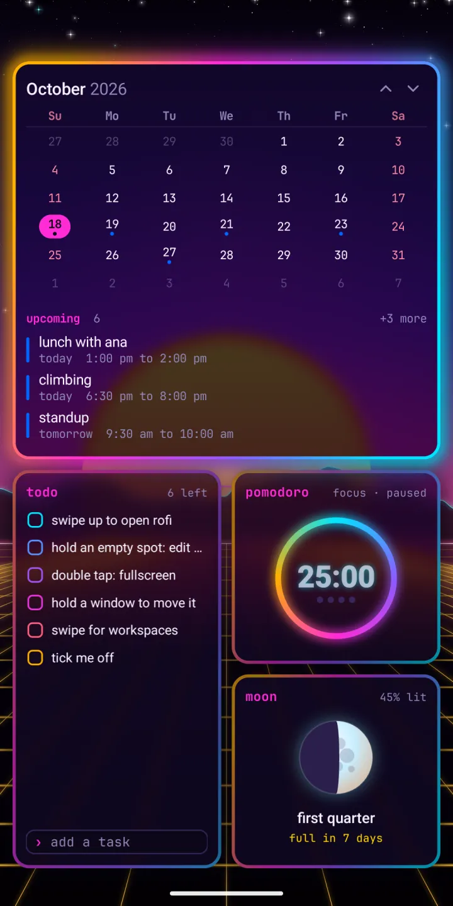
calendar, todo, pomodoro and moon 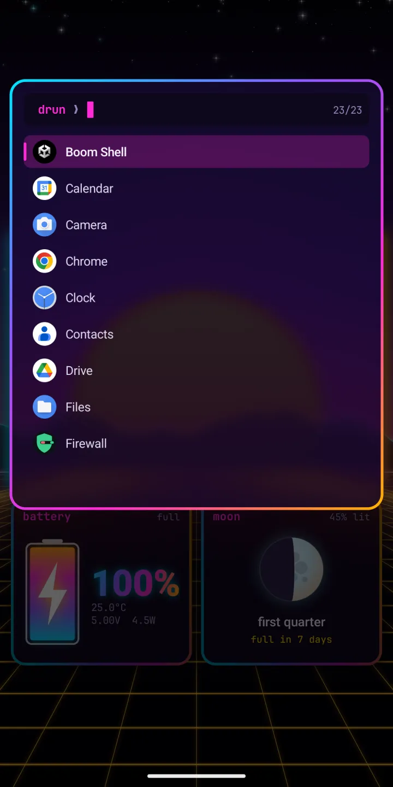
rofi: swipe up and type to find an app 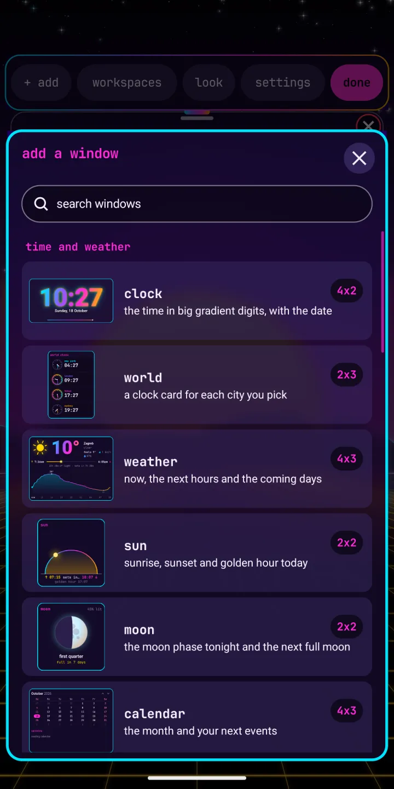
add a window: the picker 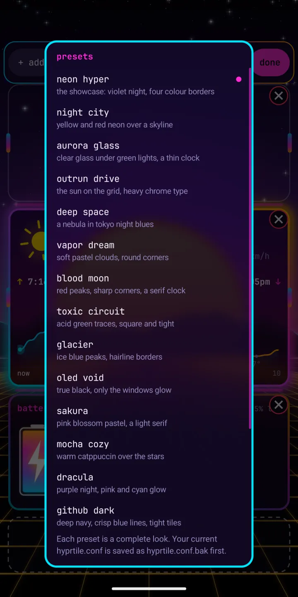
more presets from the ricing scene
Hyprtile pro
Everything above is yours with the app. One optional purchase adds everything here and every add on that comes later. No subscription.
- Android widgets from your other apps as tiled windows, stacked if you like
- A news window for any RSS or Atom feed, riced like newsboat, that turns into a ticker tape when short
- A GPS window with your position and every satellite, and a sensors window with a level, a compass and live traces
- Rain radar, aurora, quakes, iss, launches, rates, ping and git windows
- Matchday: live scores, form and tables for up to 3 teams
- Devices with your buds, watch and car battery, and health with steps, heart rate and sleep, read on this phone only
- 8 more ready workspaces, and lock screen pills for steps, sleep and buds
- 29 more themes: pure black, pure white, C64, C128 and night red among them
- Icon packs from your installed icon pack apps
- 2fa codes, encrypted on this phone only: scan a QR code, bring codes over from Google Authenticator, keep a sealed backup
- A text and json editor, strong passwords never saved, a clipboard history sealed on this phone, and contacts in search
- Friend, fli the terminal pet, as a window
Menu, hyprtile pro. restore purchase brings pro back on a new phone. More in the guide.
Quick start
- Install Hyprtile from Google Play. It runs on Android 10 or newer.
- Open it. Three screens follow:
pick your look,pick your pagesandmake it your home. Then the short tour. - Tap
finish setupat the top of the menu for the rest: lock screen, notification access and more. - Swipe sideways for workspaces, swipe up for rofi, double tap a window for full screen.
- Hold an empty spot for edit mode. Add windows, and open looks, pages and the menu from the strip.
- Pick a look under
looks, and your desktop is riced.
Guide
Setup, gestures, workspaces, edit mode, windows, looks, hyprtile.conf, lock screen, pro, battery and accessibility.
Use cases
A focus phone, a music setup, a work dashboard, a night setup, your apps as icons, a full rice and more.
Cookbook
Short recipes: try a look, name a workspace, lock with a double tap, a clock font, your Home Assistant, a private cycle tracker, live weather and more.
Runbook
When something goes wrong: home, the lock gesture, notifications, weather, the screen saver, pro and the subscription, battery, and starting over.